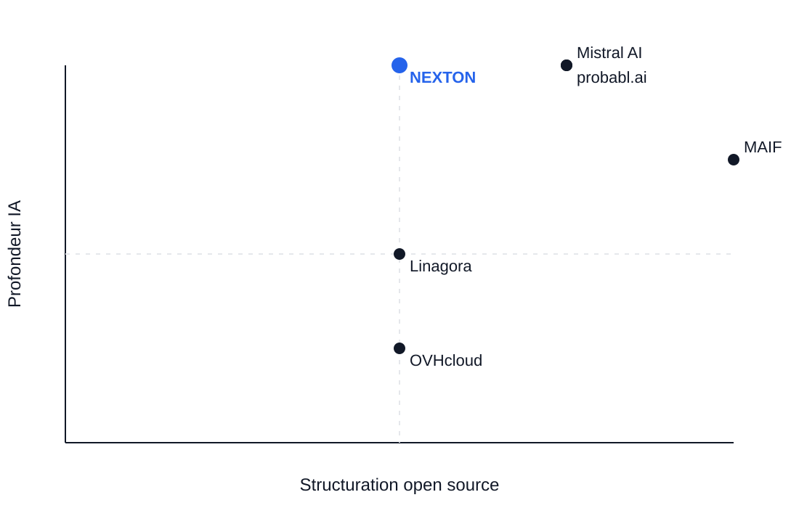

Pourquoi NEXTON fait de l’Open Source
Nous construisons des systèmes d’intelligence artificielle dans le réel, et nous choisissons d’ouvrir ce qui compte.
Pourquoi l’open source ?
L’open source est l’infrastructure viable de l’intelligence artificielle moderne.
Les systèmes d’IA les plus structurants reposent sur des dynamiques ouvertes. Non par idéologie, mais par nécessité. Les systèmes complexes exigent transparence, itération et critique collective.
Une civilisation technique a souvent besoin d’une ressource à la fois abondante, accessible et partageable. Pour le logiciel, et aujourd’hui pour l’IA, cette ressource ce sont les communs.
Chez NEXTON, nous considérons l’open source comme une nécessité technique, un levier stratégique et un engagement culturel.
Nous ne publions pas du code pour communiquer. Nous construisons des systèmes qui peuvent être compris, réutilisés et améliorés.
Pourquoi en France ?
La France et l’Europe ne manquent ni de talents, ni de rigueur, ni de tradition scientifique.
Depuis des années, le même schéma se répète. Les technologies sont conçues ailleurs, industrialisées à grande échelle ailleurs, puis adoptées en Europe.
Dans ce modèle, l’Europe ne peut pas se résigner à n’être qu’un espace de consommation et de régulation, reléguée au rang de banlieue du monde numérique.
Nous refusons cette trajectoire.
L’intelligence artificielle change profondément les conditions de production du logiciel. Avec des outils plus puissants, plus d’automatisation et des ingénieurs augmentés, il devient possible de produire davantage localement, avec des équipes plus resserrées et plus expertes.
Pendant longtemps, la production logicielle a été structurée par l’arbitrage géographique du coût du travail. Quand le levier technique augmente, cet arbitrage devient moins central. Ce qui compte davantage, c’est la qualité, la compréhension du contexte, la responsabilité et la capacité à transformer le travail en actifs durables.
Produire en France et en Europe redevient possible. Dans ce contexte, l’open source permet de créer des communs, de structurer une capacité technique locale et de participer activement à la construction de l’IA.
Le paysage open source en France
| Acteur | OSS | IA | Projets | Communauté | Attractivité | Actionnariat FR/EU |
|---|---|---|---|---|---|---|
| MAIF | ★★★★★ | ★★★★☆ | ★★★★★ | ★★★★☆ | ★★★★☆ | ★★★★★ |
| probabl.ai | ★★★★☆ | ★★★★★ | ★★★★☆ | ★★★★☆ | ★★★★★ | ★★★★★ |
| Mistral AI | ★★★★☆ | ★★★★★ | ★★★★★ | ★★★☆☆ | ★★★★★ | ★★★☆☆ |
| Linagora | ★★★☆☆ | ★★★☆☆ | ★★★★☆ | ★★★★☆ | ★★★★☆ | ★★★★★ |
| OVHcloud | ★★★☆☆ | ★★☆☆☆ | ★★★★☆ | ★★★☆☆ | ★★★★☆ | ★★★★☆ |
| NEXTON | ★★★☆☆ | ★★★★★ | ★★★☆☆ | ★★★☆☆ | ★★★★☆ | ★★★★★ |
Un espace encore peu occupé
Certains acteurs sont très structurés en open source mais peu centrés sur l’IA. D’autres sont très avancés en IA mais sans stratégie open source visible. Très peu combinent les deux avec une expérience réelle des systèmes en production.
NEXTON se positionne dans cet espace, à l’intersection de l’ingénierie IA, des systèmes réels et des communs open source.

Le cycle des systèmes d’IA
- Explorer — comprendre le problème et les données
- Construire — concevoir et entraîner
- Déployer — intégrer dans le réel
- Observer — mesurer et détecter
- Adapter — améliorer et recalibrer
- Transmettre — transformer l’expérience en communs
Avec l’open source, ce qui est appris ne disparaît pas. Cela se transmet, se réutilise et s’améliore.
Notre position
Nous construisons des systèmes d’IA dans le réel, et nous choisissons d’en ouvrir une partie.
Parce que cela améliore la qualité. Parce que cela attire les bons profils. Parce que cela contribue à un écosystème plus solide.
Et parce que nous préférons construire plutôt que subir.